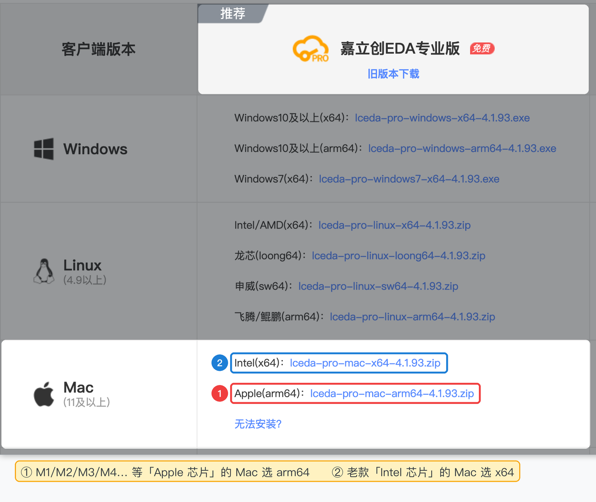
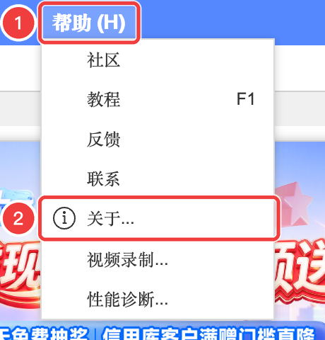
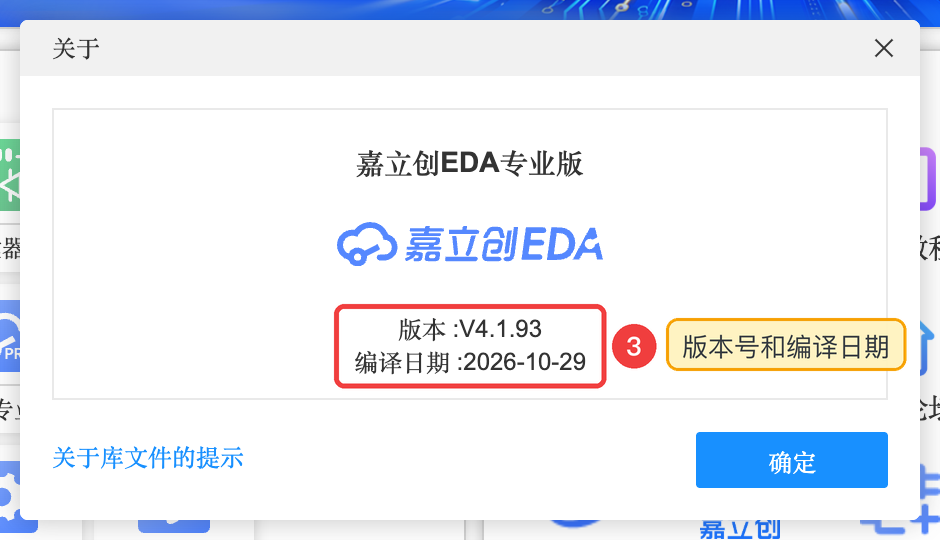

0.2 什么是 EDA，什么是嘉立创EDA
这一节搞清楚三件事：EDA 是什么；嘉立创EDA 有哪些版本、我们用哪个；它和立创商城、嘉立创工厂是什么关系。
EDA 是什么#
EDA 是 Electronic Design Automation 的缩写，直译“电子设计自动化”。说白了，就是专门用来设计电路和电路板的软件。
可以这样类比：写文章用 Word，修照片用 Photoshop，设计电路板就用 EDA。常见的 EDA 软件有 Altium Designer、KiCad、Cadence 等，嘉立创EDA 也是其中之一。
为什么选嘉立创EDA#
| 特点 | 对新手意味着什么 |
|---|---|
| 🆓 免费 | 注册登录就能用，不用买软件，也不用找来路不明的“破解版” |
| 🌐 打开网页就能用 | 不用安装，Mac、Windows 都能用；工程自动保存在云端，换台电脑登录就能接着做 |
| 🇨🇳 全中文界面和教程 | 菜单、提示、官方文档都是中文 |
| 📦 元件库和商城打通 | 搜元件时直接看到库存和价格，画完能一键生成采购清单 |
| 🏭 一键下单 | 画完的板子可以直接跳转到嘉立创工厂下单，不用自己整理一堆文件 |
专业版和标准版：我们用专业版#
嘉立创EDA 有两个版本，名字很像，但是两个不同的软件：
| 嘉立创EDA 专业版 ✅ 本教程使用 | 嘉立创EDA 标准版 | |
|---|---|---|
| 推出时间 | 2019 年末，持续更新中 | 2017 年（国内版），现在以维护为主，基本不再加大功能 |
| 网址 | pro.lceda.cn | lceda.cn/editor |
| 性能 | 基于 WebGL，大板子、上万焊盘也流畅 | 基于 SVG，板子大了会卡 |
| 功能 | 更强：规则管理、自动布线、层次图、仿真、3D 外壳、面板设计…… | 较基础 |
| 数据 | 两个版本的工程不互通；但专业版开始页有「迁移标准版」「导入标准版」入口，可以把标准版的工程搬过来 | |
嘉立创EDA 和“立创商城”“嘉立创”是什么关系#
做一块电路板，除了软件还需要买元件、找工厂。嘉立创EDA 属于一个“全家桶”，几个平台之间是打通的：
在线版还是客户端？#
嘉立创EDA 专业版有两种用法，功能基本一样：
| 在线版（浏览器）✅ 本教程使用 | 客户端（安装到电脑） | |
|---|---|---|
| 怎么用 | 浏览器打开 https://pro.lceda.cn/editor | 从官网下载安装包安装 |
| 工程存在哪 | 云端（登录账号就能看到） | 可选：全在线（和网页版一样）、半离线、全离线（保存在本机） |
| 适合谁 | 新手、经常换电脑的人 | 网络不好、需要离线工作、或者想要独立窗口的人 |
本教程全程使用在线版 + Chrome 浏览器截图。如果你想装客户端，到官网下载页（lceda.cn/page/download）选自己的系统。Windows 用户直接下载 Windows 版安装即可；下面的截图是 Mac 部分。Mac 要选对芯片版本：

看看你用的是哪个版本#
嘉立创EDA 更新很勤快，界面会慢慢变化。本教程基于 V4.1.93（编译日期 2026-10-29）制作。打开编辑器后，你可以这样查看自己的版本：
- 点顶部菜单栏的「帮助」
- 点「关于...」
- 弹出的窗口里就能看到版本号和编译日期（右上角菜单栏旁边也一直显示着版本号）

